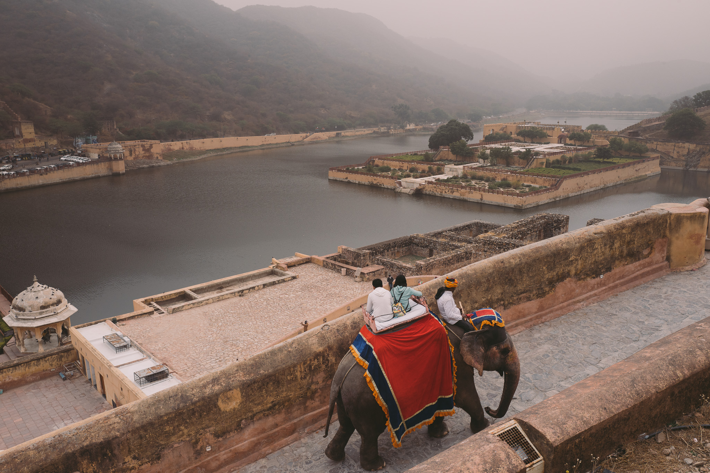
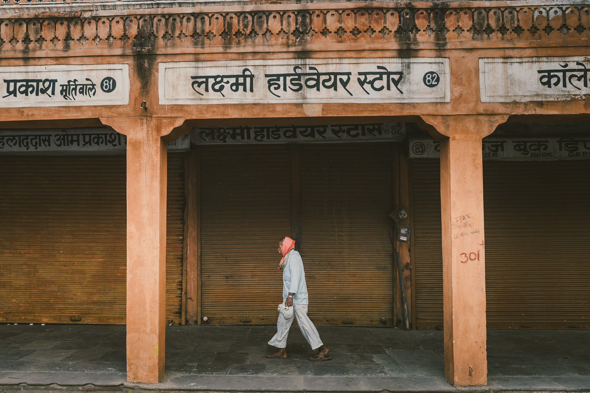
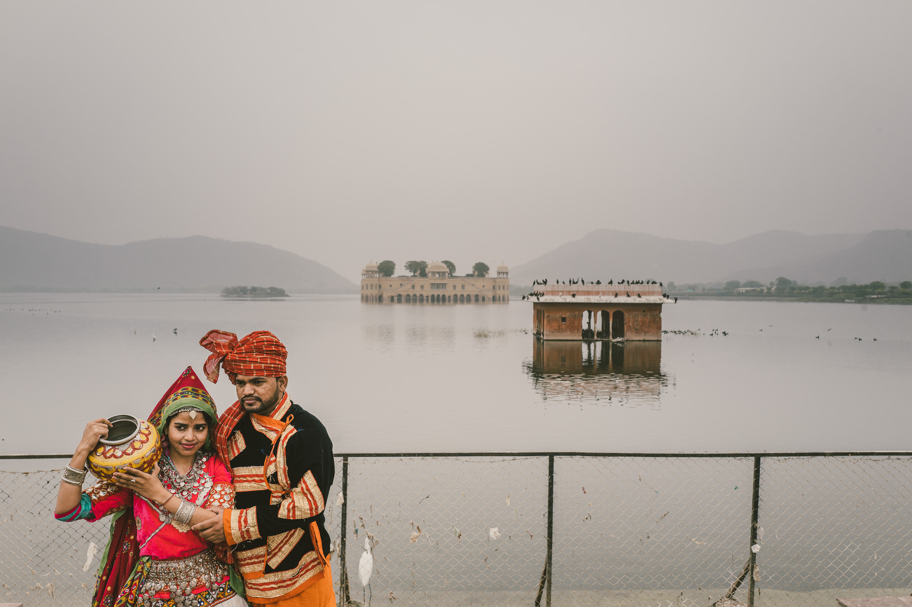
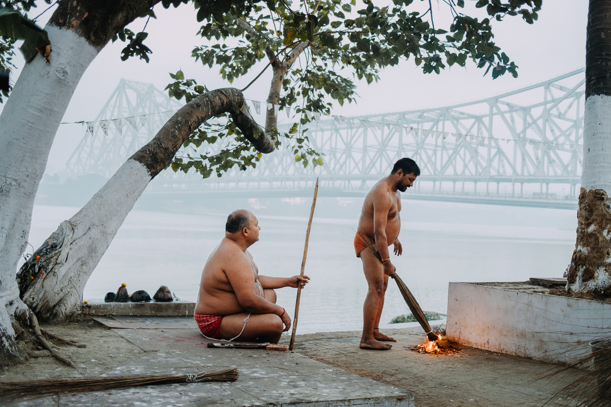
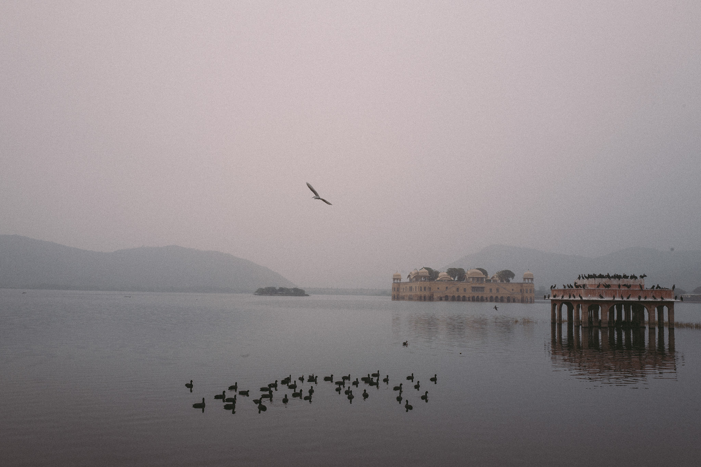
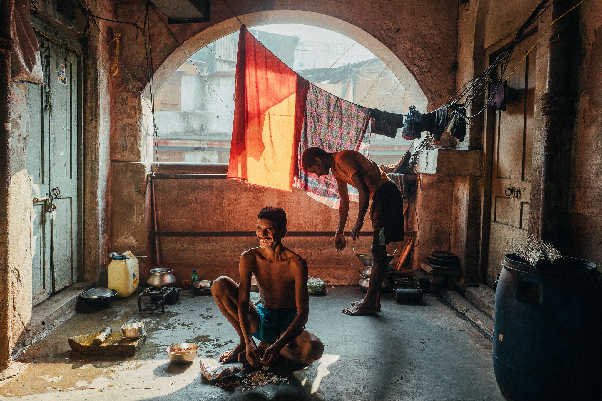

"Lens on India" is an extraordinary and captivating tour,
meticulously to shine a spotlight on the magnificent essence of
India. From the bustling streets of historic Old Delhi to the
awe-inspiring grandeur of the iconic Taj Mahal, from the majestic
forts and bustling thoroughfares of Jaipur and Jodhpur to the
striking landscapes of Rajasthan and the enchanting palaces adorning
the shimmering lakeside of Udaipur, Shivam and Seng will ensure that
every moment of your exploration is infused with his unparalleled
vision and perspective.

Shivam's profound passion for photography will not only inspire your
artistic senses but also guide you in capturing the essence of this
incredible nation. Seng, our esteemed professional photography
educator and seasoned tour leader, brings his wealth of knowledge and
years of experience, having immersed himself in the wonders of India
since 2008. Together, Shivam and Seng form an unrivalled duo,
dedicated to nurturing your photographic skills, providing invaluable
insights, and offering guidance to elevate your photography and travel
experience in India to new heights.

What you can expect to experience on this tour:
We will make you embark on a captivating expedition through the
enchanting tapestry of India, where every moment promises to be an
extraordinary adventure. Our journey commences amidst the bustling
thoroughfares, vibrant markets, sacred temples, and architectural
marvels of Delhi, a city teeming with life and pulsating energy.
Prepare to be mesmerised as you tick off a remarkable milestone from
your bucket list: an encounter with the resplendent Taj Mahal in Agra,
an unparalleled masterpiece that must be witnessed firsthand to
comprehend its majestic grandeur.
As we venture into the kaleidoscopic desert landscapes of Rajasthan, a
realm ablaze with vivid colours, a treasure trove of marvels awaits
your exploration. Immerse yourself in the magnificence of Jaipur,
adorned with majestic forts, the fabled Pink City, and awe-inspiring
vistas from lofty temples. Your senses will awaken as we journey to
Jodhpur, a city that effortlessly captivates the discerning eye of a
photographer. Stroll through the labyrinth of cerulean blue alleyways
in the Blue City and wander within the formidable walls of the mighty
Mehrangarh Fort.

Continuing our odyssey through India, we delve into the world of the
Rabari shepherds of Rajasthan, witnessing their timeless traditions
and immersing ourselves in their captivating way of life. Our sojourn
then leads us to the exquisite city of Udaipur, where ethereal marble
palaces reflect upon the tranquil waters of Lake Pichola.
You will indulge in a remarkable journey that satiates your longing
for unparalleled travel experiences and ignites your passion for
capturing vibrant, enduring memories through photography. Whether you
find yourself capturing the awe-inspiring allure of the Taj Mahal or
forging deep connections with the people and essence of India, our
tours are thoughtfully designed to provide insightful and meaningful
photographic encounters.
Who can join this tour:
Suitable for both amateur enthusiasts and seasoned professionals, this
photography tour has been meticulously curated as an intimate and
exclusive experience for a small group of 8 to 10 guests. Our
dedicated air-conditioned bus, accompanied by a skilled driver, will
ensure seamless transfers throughout the expedition. To enhance your
understanding and appreciation of each destination, an
English-speaking guide will accompany us, enriching our encounters
with their expertise. Immerse yourself in the comfortable embrace of
characterful accommodations, handpicked to embody the essence of
India, including boutique hotels and heritage havelis (mansions).
We will make you unleash your wanderlust and embark on a
transformative sojourn through India, where every step reveals a new
dimension of beauty and discovery. Join us on this extraordinary
voyage and allow your vision to be forever transformed by the
captivating allure of this remarkable nation.



Itinerary for Lens on India Photo Tour
Day 1
Arrival in Delhi, Delhi markets and sights, Safdarjung's Tomb
Arrive in Delhi and transfer to hotel
Visit Chhatarpur Flower Market and Qutub Minar
Lunch at a local restaurant
Visit Safdarjung's Tomb in the afternoon
Day 2
Delhi ghats, wrestlers and Jama Masjid
Sunrise shoot at Yamuna Ghat
Visit a traditional Indian wrestling akhara
Photography walk in Old Delhi and visit to Jama Masjid
Day 3
Humayun's Tomb and journey to Agra and the Taj Mahal
Visit Humayun's Tomb in the morning
Travel to Agra and visit Mehtab Bagh in the afternoon
Day 4
Taj Mahal sunrise and journey to Jaipur
Early morning visit to the Taj Mahal
Breakfast and travel to Jaipur
Afternoon at leisure in Jaipur
Day 5 - The Jewels of Jaipur
Sunrise shoot at Lake Maota with Amer Fort in the background
Visit Hawa Mahal and explore bazaars of Jaipur
Visit Galtaji Temple and Sun Temple in the afternoon
Day 6
Sunrise at the Water Palace and the journey to Jodhpur
Sunrise shoot at Jal Mahal
Travel from Jaipur to Jodhpur with a photography stop near
Kishangarh
Day 7
The Streets of Jodhpur and its Blue City
Sunrise shoot at Toorji ka Jhalra stepwell
Visit Mehrangarh Fort and Jaswant Thada
Explore the Blue City of Jodhpur
Day 8
Sardar Market and the Journey to Udaipur
Morning street photography walk in Sardar Markets
Travel to Jojawar village and interact with the Rabari people
Day 9
Village streets and journey to Udaipur
Morning street photography in Jojawar
Travel to Udaipur and check into hotel
Sunset shoot on Lake Pichola
Day 10
Udaipur ghats, streets and sunset on Lake Pichola (boat
cruise)
Explore ghats and streets around Lal Ghat in the morning
Photography walk in Udaipur streets
Sunset boat cruise on Lake Pichola
Day 11
Departing Udaipur and farewells
Morning shoot at a local market
Leisure time and packing
Transfer to Udaipur Airport for departure
Disclaimer : Private car and driver will be provided throughout
the festival days for convenient travel between locations. The
itinerary is subject to change based on local conditions and
availability.
Tour Inclusions
Accommodation : 10 nights of accommodation in hotels and
heritage/boutique hotels on single occupancy. Double occupancy is
available if you are joining the tour with a life partner or
spouse who is also a photographer.
Meals : Breakfast, lunch, and dinner are included
throughout the tour.
Airport Transfers : Arrival and departure airport transfers
are provided assuming your arrival in New Delhi and departure from
Udaipur.
Land Travel : Land travel during the tour will be in an
air-conditioned mini coach.
Private Boat Ride : A private boat ride on Lake Pichola in
Udaipur is included.
Jeep Safari : A jeep safari to Rabari villages and around
Jojawar is included.
Gratuities : Gratuities to hotel staff, representatives,
driver, and helper are included. You may need to cover your own
incidental tips when photographing people in the streets or on
location during the tour.
Bottled Water : Bottled water will be provided during
transfers to destinations within the tour itinerary.
Local Guides : Services of local English-speaking guides
will be available during the sightseeing tours.
Entry Fees : Entry fees to monuments (single entry) are
included, including the photography fee. The photography fee
covers one camera per guest. If you are bringing a second camera,
you'll need to cover the fee for the second camera.
Domestic Flight : Economy airfare from Udaipur to Delhi on
Day 11 is included with a 25 kg baggage allowance.
Photographic Instruction : Photographic instruction and
guidance will be provided.
Tour Exclusions
Flights : Flights to and from New Delhi at the start and
end of the tour are not included.
Airport Tax: Airport tax, if applied, is not included.
Video Camera Fees : Visitors to monuments are charged a
separate video camera fee if they bring a dedicated video camera.
DSLR/Mirrorless cameras that also take video are exempt from this
fee.
Travel Insurance : Comprehensive travel insurance,
including medical and evacuation insurance, is not included. All
participants are required to have comprehensive travel insurance
for the tour.
Entry Visa : Entry visa to India is not included. The cost
is around USD$25 for an eVisa if you are an Australian.
Photographic Equipment : Photographic equipment, including
cameras, lenses, tripods, batteries, filters, memory cards, etc.,
is not provided. Participants need to bring/supply their own
equipment.
Equipment Insurance : Insurance for your photographic
equipment while on tour is not included.
Alcoholic Drinks : Alcoholic drinks are not included.
Personal Expenses : All personal expenses and fees,
including laundry, Wi-Fi, medication, incidental meals, and
snacks, are not included.
Additional Transport and Fees: Any transport and fees outside of
the tour itinerary are not included.